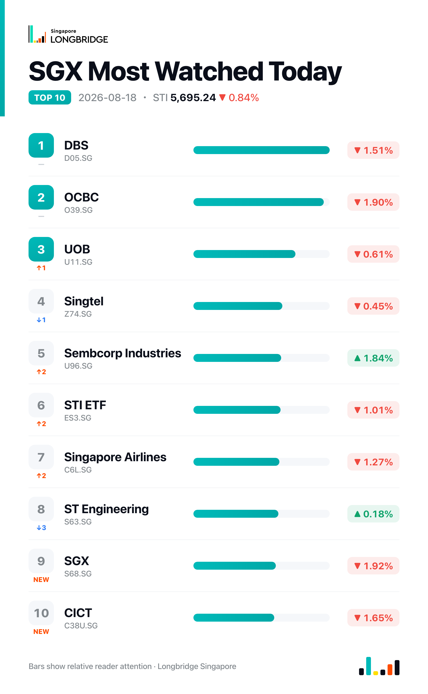

STI Falls 0.84% to 5,695.24 as Banks, Property Names Lead Broad Decline; Sembcorp Industries Bucks the Slide
The Straits Times Index closed at 5,695.24 on Tuesday, down 48.35 points, or 0.84%, after trading between an intraday low of 5,686.51 and a high of 5,738.74, finishing near the session's low. Decliners led advancers 19 to 7 among the benchmark's 30 constituents, with four unchanged, as banking and property-linked counters accounted for most of the day's weakest performers.
The slide traced back to a soft regional lead: the Hang Seng Index opened down 0.97% on Tuesday following an overnight retreat on Wall Street, and the STI itself opened 0.97% lower at 5,712.68 before extending losses through the session. Early declines were concentrated in Singapore Exchange, CapitaLand Investment and OCBC, while a handful of energy and industrial names — City Developments, Sembcorp Industries and Seatrium among them — moved against the tide. The pattern held through the close: banks and property names dominated the day's laggards even as a small group of energy-linked counters bucked the broader retreat.
Session Movers
Sembcorp Industries (U96.SG, +1.84%) was the session's best-performing large-cap constituent, extending Monday's gain on continued attention to its Indian renewable-energy unit, Sembcorp Green Infra, which is preparing to list in India and raise about $500 million with Temasek's backing — its second attempt at an India listing, with a draft filing possible as early as this month. The stock has also drawn reaffirmed Buy calls from CGS International on Aug. 15 and DBS on Aug. 14, even after its removal from the MSCI Singapore Index on Aug. 13. Sembcorp Industries trades at 17.77 times earnings, roughly in line with its industry peer median, with a consensus Buy rating and an S$6.63 target implying about 9% upside from current levels.
Singapore Airlines (C6L.SG, -1.27%) fell despite July operating data released Tuesday showing group passenger traffic up 2.6% year-on-year to 3.7 million travellers, with capacity up 5.5% on network expansion across East Asia, Europe and the South West Pacific and an 86% load factor. Cargo told a weaker story: capacity fell 1.5% amid maintenance issues, and services to Jeddah and Dubai remained suspended because of regional conflicts. Shares closed at S$7.01, just below the S$7.05 consensus target analysts set a day earlier, with a Hold rating unchanged since the group's quarterly loss despite record revenue drew scrutiny earlier this month.
DBS (D05.SG, -1.51%) closed at S$75.72, giving back part of Monday's rally that had briefly pushed the stock above its consensus target. There was no single stock-specific trigger: DBS was one of three lenders, alongside OCBC and UOB, providing a S$530 million green loan to data-centre developer DayOne for its first Singapore facility, and was named sole adviser on a new sustainability financing framework for Centurion Corporation. OCBC and UOB also fell, down 1.9% and 0.61% respectively, a rare session in which all three local banks declined together rather than diverging as they had for most of the past two weeks. DBS trades at 3.11 times book, above its industry peer median of 1.37 and cheaper than just 0.08% of its own five-year range.
Hongkong Land (H78.SG, -2.91%) was the session's weakest constituent, extending losses within a broader property-sector pullback that also dragged CapitaLand Investment down 2.55%. There was no fresh company disclosure; the stock's recent coverage remains split, with one valuation narrative pointing to a premium to the current price and a separate discounted-cash-flow estimate suggesting the shares are overvalued. Hongkong Land trades at 0.585 times book — above its own one-year range and cheaper than just 17.24% of the past year — with a consensus Buy rating and an S$10.16 target implying about 22% upside.

One point worth noting
Breadth confirmed Tuesday's decline rather than diverging from it: 19 of the index's 30 constituents fell against seven advancers, the same direction as the index for the fifth time in the last six sessions — only Aug. 13, when the index closed almost flat despite nineteen decliners, broke that pattern. That makes Tuesday's slide broader-based than Monday's advance, which had rested on a narrower set of energy and infrastructure gainers.
This recap is for informational purposes only and does not constitute investment advice.